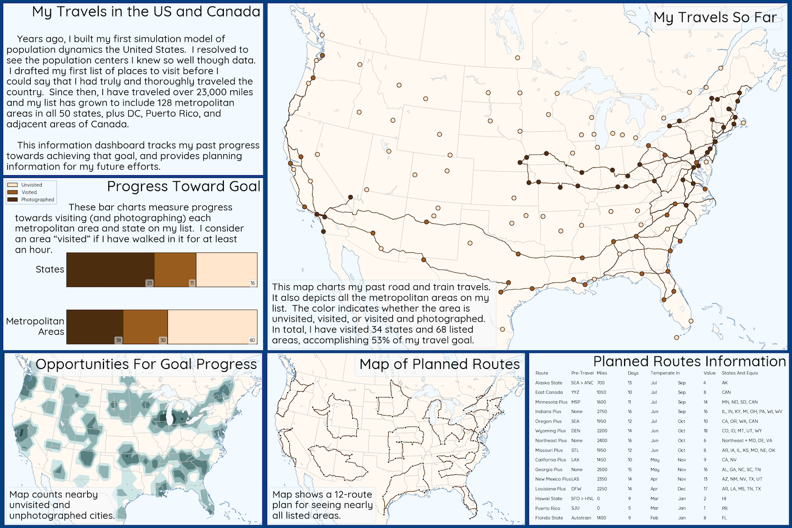
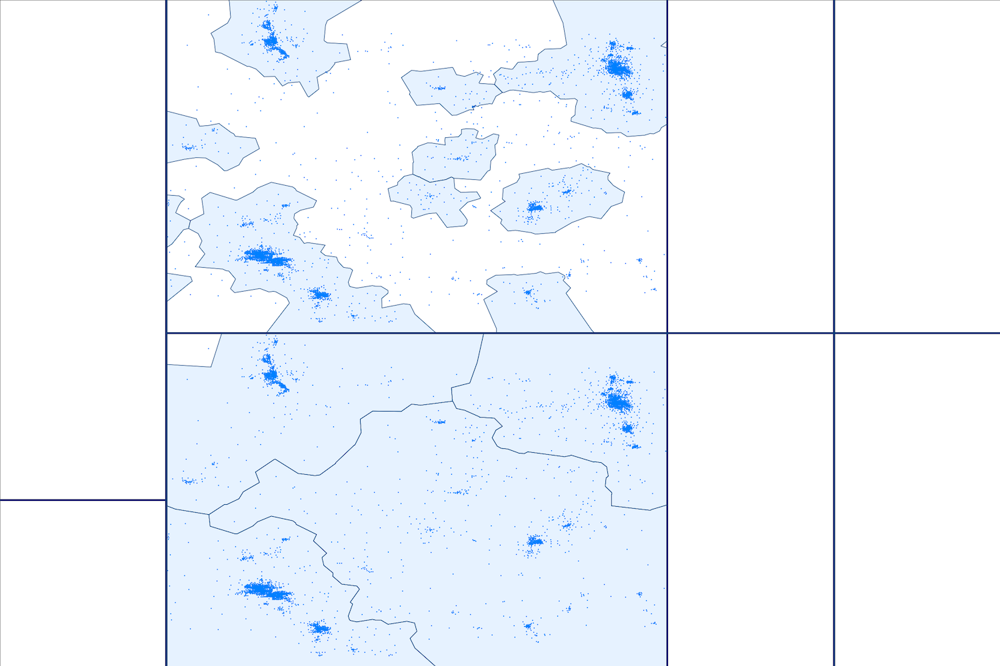

This gallery provides a showcase
for some of the programming activities conducted on my personal time.
I do these projects for professional and personal reasons:
Professionally, I use these projects to keep my skills sharp and provide
a sample code portfolio that prospective business associates can view.
I think programming is as close to magic as one can get
in the real world – datamancy? After writing code for so many years, it has
become a favorite tool in my life toolkit. I conducted some of these
projects for the fun of solving data / algorithmic puzzles and some to support
the various life activities that bring me happiness.
My full github repository is at this link:
github.com/sjoshuam
Since this gallery showcases personal projects, you may find the offerings
idiosyncratic. Here are examples of professional projects from my RAND years:

Years ago, I built my first model of US population dynamics. I
resolved to see the population centers I knew so well through data and created a
list of 128 areas to visit. This information dashboard tracks my past progress
towards achieving that travel goal and provides planning information for my
future efforts.
This project is 67% complete, with fully written rough and revised code drafts.
Further development is on hold until development on other projects has
progressed further.
Language: Python (.ipynb)
GitHub repository:
us_travels

In the us_travel project, I map pre-planned routes for achieving my
travel goals. In this project, I analyze weather data to find the best times of
the year to travel each route.
This project is 61% complete and actively under development. Second draft code
is complete, except for testing.
Language: Python (.ipynb)
GitHub repository:
travel_weather

This project applies cluster detection machine learning methods towards dividing
the US into a small number of regions based on the where people actually live.
It correspond to asking, what would US state borders look like if they grouped
together people who lived near each other?
This project is 19% complete. I have written the initial plan and about
half of the first draft code.
Language: Python (.ipynb)
GitHub repository:
pop_cluster_map

The US states have unequal populations, unequal
land areas, and borders that cut through major urban centers. This project creates
an interactive tool for exploring how targeted changes to state borders could
produce better state borders. The tool takes up to 15 seconds to load.
This project is complete. It could use further optimization to reduce load
times. However, since I am now focused on building my Python skills,
further development of this R project is not a priority.
Language: R
GitHub repository:
better_state_borders

Scatterplots can become ineffective or misleading if there are too many data
points because most points are invisible beneath other nearby points. This project
discusses solutions to this problem and illustrates them with a map of the US
population.
This project is about 20% but not currently under active development. The rough
draft code is mostly complete, but explanatory text is partially
missing. Since I am currently focused on building my Python skills,
this R project is a low priority. Some of the better ideas from this project
will likely turn into a new Python project at some future date.
Language: R GitHub repository:
crowded_scatterplot